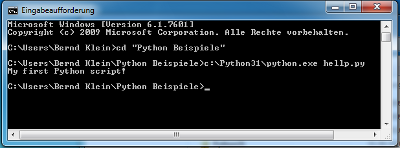

Execute a Python script
So far we have played around with Python commands in the Python shell. We want to write now our first serious Python program. You will hardly find any beginner's textbook on programming, which don't start with the "nearly mandatory" "Hello World" programm, i.e. a program which prints the string "Hello World", which looks on the Python shell like this:
$ python3
Python 3.1.2 (r312:79147, Sep 27 2010, 09:57:50)
[GCC 4.4.3] on linux2
Type "help", "copyright", "credits" or "license" for more information.
>>> print("Hello World!")
Hello World!
>>>
But, as we said at the beginning, we want to write a "serious" script now. We use a slight
variation of the "Hello World" theme. We have to include our print statement into a file.
To save and edit our program in a file we need
an editor. There are lots of editors, but you should choose one, which supports syntax
highlighting and indentation. Under Linux you can use vi, vim, emacs, geany, gedit and umpteen
others. The emacs works under windows as well.
So, after you have found the editor of your choice, you can input your mini script, i.e.
print("My first simple Python script!")
and save it as my_first_simple_script.py.
The suffix .py is not really necessary under Linux but it's good style to use it. But the extension is essential, if you want to write modules.
Start a Python script
Let's assume our script is in a subdirectory under the home directory of user monty:
monty@python:~$ cd python monty@python:~/python$ python my_first_simple_script.py My first simple Python script! monty@python:~/python$
It can be started under Windows in a Command prompt (start -> All Programs -> Accessories -> Command Prompt):

Python Internals
Most probably you will have read somewhere, that the Python language is an interpreted programming or script language. The truth is: Python is both an interpreted and a compiled language. But calling Python a compiled language would be misleading. People would assume that the compiler translates the Python code into machine language. Python code is translated into intermediate code, which has to be executed by a virtual machine, known as the PVM, the Python virtual machine. This is a similar approach to the one taken by Java. There is even a way of translating Python programs into Java byte code for the Java Virtual Machine (JVM). This can be achieved with Jython.The question is, do I have to compile my Python scripts to make them faster or how can I compile them? The answer is easy: Normally, you don't need to do anything and you shouldn't bother, because "Python" is doing the thinking for you, i.e. it takes the necessary steps automatically.
For whatever reason you want to compile a python program manually? No problem. It can be done with the module py_compile, either using the interpreter shell
>>> import py_compile
>>> py_compile.compile('my_first_simple_script.py')
>>>
or using the following command at the shell prompt
python -m py_compile my_first_simple_script.pyEither way, a file named "easy_to_write.pyc" will be created. This file can be executed under Linux, if the has been made executable beforehand:
monty@python:~/examples$ python3 -m py_compile my_first_simple_script.py monty@python:~/examples$ chmod 755 my_first_simple_script.pyc monty@python:~/examples$ ./my_first_simple_script.pyc My first simple Python script! monty@python:~/examples$
You can also automatically compile all files in a directory using the compileall module. You can do it from the shell prompt by running compileall.py and providing the path of the directory containing the Python files to compile:
monty@python:~/python$ python -m compileall . Listing . ...
But as we have said, you don't have to bother about compiling Python code. The compilation is hidden from the user. Some newbies to Python wonder sometimes where these ominous files with the .pyc suffix might come from. If Python has write-access for the directory where the Python program resides, it will store the compiled byte code in a file that ends with a .pyc suffix. If Python has no write access, the program will work anyway. The byte code will be produced but discarded when the program exits.
Whenever a Python program is called, Python will check, if there exists a compiled version with the .pyc suffix. This file has to be newer than the file with the .py suffix. If such a file exists, Python will load the byte code, which will speed up the start up time of the script. If there exists no byte code version, Python will create the byte code before it starts the execution of the program. Execution of a Python program means execution of the byte code on the Python Virtual Machine (PVM).

Every time a Python script is executed, byte code is created. But only, if a Python program is
imported as a module, the byte code will be stored in the corresponding .pyc file.
So the following will not create a byte code file:
monty@python:~/python$ python my_first_simple_script.py My first simple Python script! monty@python:~/python$The import in the following session will create a byte code file with the name "easy_to_write.pyc":
monty@python:~/tmp$ ls my_first_simple_script.py monty@python:~/tmp$ python Python 2.6.5 (r265:79063, Apr 16 2010, 13:57:41) [GCC 4.4.3] on linux2 Type "help", "copyright", "credits" or "license" for more information. >>> import my_first_simple_script My first simple Python script! >>> exit() monty@python:~/tmp$ ls my_first_simple_script.py my_first_simple_script.pyc monty@python:~/tmp$
Compiler
Definition: A compiler is a computer program that transforms (translates) source code of a programming language (the source language) into another computer language (the target language). In most cases compilers are used to transform source code into executable program, i.e. they translate code from high-level programming languages into low (or lower) level languages, mostly assembly or machine code.
Interpreter
Definition: An interpreter is a computer program that executes instructions written in a programming language. It can either
- execute the source code directly or
- translates the source code in a first step into a more efficient representation and executes this code